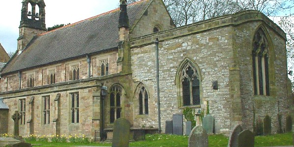

WELCOME TO WEST LEAKE
ABOUT WEST LEAKE
West Leake is a small conservation village and civil parish in the Rushcliffe district of Nottinghamshire.
LEARN ABOUT OUR CULTURE
The parish church is St. Helena's Church, West Leake. The church was designated Grade II* on 13 October 1966.

WHERE TO VISIT
West Leake has many places you can visit. It is a beautiful area.
HERE IS WHERE TO VISIT
In addition to St. Helena's Church there are four other listed structures in West Leake, all Grade II listed: 55, Main Street; Lychgate at Entrance to Churchyard of Church of St Helena; Sundial in Churchyard of Church of St Helena, Single Metre South of the Chancel; and The Old Rectory.


Find us @